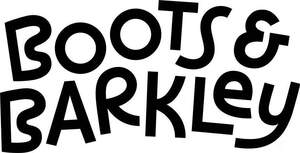

Trade Mark Journal No.2025/020 16 May 2025
UK00004168565 4 March 2025 (6,8,9,14,16,18,20,21,24,26,27,28,31,35)

International priority date claimed: 4 September 2024
(United States of America)
(98/733,475)
- Class 6
- Metal dog tags; fixed metal dispensers for dog waste bags; metal pet doors and safety gates; pet collar accessories, namely, bells, metal bells, fitted silencers for metal pet tags.
- Class 8
- Nail clippers; clip and file nail set; hair clippers, shedding blades and trimmers for pets.
- Class 9
- Sunglasses for pets; pet collar accessories, namely, safety lights and blinkers.
- Class 14
- Pet collar accessories, namely, pendants and slides.
- Class 16
- Plastic bags for disposing of pet waste; disposable housebreaking pads for pets; paper pet crate mat.
- Class 18
- Restraining devices for walking pets and for dogs, namely leashes, leash hooks, collars, tie-out chains and tie-out cables; collars and leads for pets; pet clothing; rawhide chews for pets; animal carriers; pet collar accessories, namely, fitted silencers for non-metal pet tags, bows for pets; harnesses for walking pets; costumes for animals; raincoats and vests for pets; hats and boots for pets.
- Class 20
- Pet beds; pet cushions; pet furniture; pet kennels and pet carriers; cat scratching posts; pet crates.
- Class 21
- Grooming accessories for cats and dogs, namely, grooming mitts, lint rollers, cleaning sponges, combs and brushes; pickup device for pet droppings, namely, manually operated scoop; pet feeding dishes; animal feeding bowls; cat litter pans; food scoops; household storage containers for pet food and treats; portable dispensers for plastic bags sold as a unit; window perch for pets.
- Class 24
- Pet towels; pet blankets; fabric bed covers.
- Class 26
- Pet collar accessories, namely, charms.
- Class 27
- Pet feeding mats; pet litter pan floor mats.
- Class 28
- Pet toys.
- Class 31
- Pet food; consumable pet chews; aromatic litter for pets; edible pet treats; catnip.
- Class 35
- Retail store services connected with the sale of pet food, pet supplies, pet toys and pet accessories; online retail store services connected with the sale of pet food, pet supplies, pet toys and pet accessories; wholesale store services connected with the sale of metal dog tags, fixed metal dispensers for dog waste bags, metal pet doors and safety gates, pet collar accessories (namely, bells, metal bells, fitted silencers for metal pet tags), nail clippers, clip and file nail set, hair clippers, shedding blades and trimmers for pets, sunglasses for pets, pet collar accessories (namely, safety lights and blinkers), pet collar accessories (namely, pendants and slides), plastic bags for disposing of pet waste, disposable housebreaking pads for pets, paper pet crate mat, restraining devices for walking pets and for dogs (namely leashes, leash hooks, collars, tie out chains and tie-out cables), collars and leads for pets, pet clothing, rawhide chews for pets, animal carriers, pet collar accessories (namely fitted silencers for non-metal pet tags, bows for pets), harnesses for walking pets, costumes for animals, raincoats and vests for pets, hats and boots for pets, pet beds, pet cushions, pet furniture, pet kennels and pet carriers, cat scratching pots, pet crates, grooming accessories for cats and dogs (namely, grooming mitts, lint rollers, cleaning sponges, combs and brushes), pickup device for pet droppings (namely, manually operated scoop), pet feeding dishes, animal feeding bowls, cat litter pans, food scoops, household storage containers for pet food and treats, portable dispensers for plastic bags sold as a unit, window perch for pets, pet towels, pet blankets, fabric bed covers, pet collar accessories (namely, charms), pet feeding mats, pet litter pan floor mats, pet toys, pet food, consumable pet chews, aromatic litter for pets, edible pet treats, catnip; online wholesale store services connected with the sale of metal dog tags, fixed metal dispensers for dog waste bags, metal pet doors and safety gates, pet collar accessories (namely, bells, metal bells, fitted silencers for metal pet tags), nail clippers, clip and file nail set, hair clippers, shedding blades and trimmers for pets, sunglasses for pets, pet collar accessories (namely, safety lights and blinkers), pet collar accessories (namely, pendants and slides), plastic bags for disposing of pet waste, disposable housebreaking pads for pets, paper pet crate mat, restraining devices for walking pets and for dogs (namely leashes, leash hooks, collars, tie out chains and tie-out cables), collars and leads for pets, pet clothing, rawhide chews for pets, animal carriers, pet collar accessories (namely fitted silencers for non- metal pet tags, bows for pets), harnesses for walking pets, costumes for animals, raincoats and vests for pets, hats and boots for pets, pet beds, pet cushions, pet furniture, pet kennels and pet carriers, cat scratching pots, pet crates, grooming accessories for cats and dogs (namely, grooming mitts, lint rollers, cleaning sponges, combs and brushes), pickup device for pet droppings (namely, manually operated scoop), pet feeding dishes, animal feeding bowls, cat litter pans, food scoops, household storage containers for pet food and treats, portable dispensers for plastic bags sold as a unit, window perch for pets, pet towels, pet blankets, fabric bed covers, pet collar accessories (namely, charms), pet feeding mats, pet litter pan floor mats, pet toys, pet food, consumable pet chews, aromatic litter for pets, edible pet treats, catnip.
Target Brands, Inc.
Representative: Cleveland Scott York